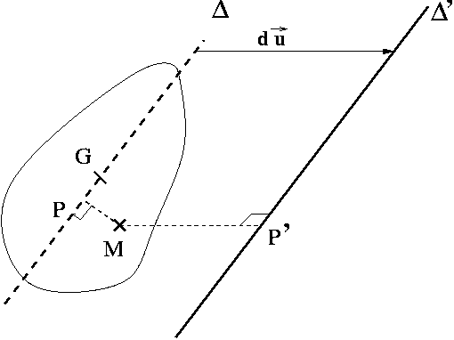
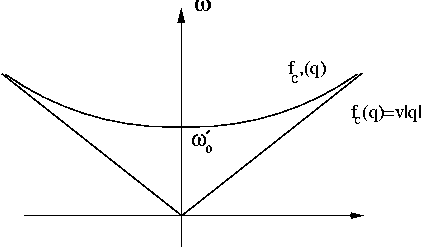
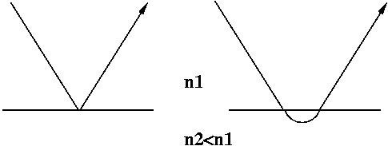
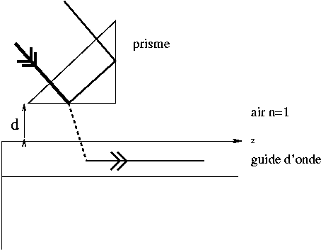

3. Chaı̂ne avec balourd¶
3.1 Equations générales¶
3.1.1 moment d’inertie¶
On applique le théorème de Huygens (qu'on va redémontrer).
Théorème de Huygens
Démonstration (rappel):
Soit (S) un solide et \(\Delta'\) une droite. On cherche le moment d'inertie de (S) par rapport à \(\Delta'\). On introduit la droite \(\Delta\), passant par G (centre d'inertie de (S) ) et parallèle à \(\Delta'\). \(\Delta'\) est la translatée de \(\Delta\) par le vecteur unitaire \(\vec{u}\) sur une distance \(l\).
On appelle \(M\) le point courant décrivant le volume de (S) et P' (resp. P) le projeté orthogonal sur \(\Delta'\) (resp. \(\Delta\)).
Par définition du moment d'inertie :
On décompose \((MP')^2\) en introduisant P :
On renvoit ceci dans la définition de \(J'\) :
Le premier terme donne \(J\), le troisième \(Ml^2\) et le second terme est nul car :
La première intégrale est nulle d'après la propritété remarquable d'un centre de masse; et la seconde intégrale est nulle car \(\vec u\) et \(\overrightarrow{GP}\) sont orthogonaux. CQFD.

3.1.2 nouvelle équation du mouvement¶
Il faut à présent tenir compte du couple exercé en \(O_n\) par le poids appliqué en \(G_n\); soit en projection sur l'axe de la chaîne :
nouvelle équation du mouvement
3.1.3 nouvelle expression de l’énergie mécanique¶
Il faut tenir compte d'une énergie potentielle de pesanteur \(E_{pp}\) (puisque maintenant le travail du poids n'est plus nul); on choisit l'origine pour \(\theta_n = 0\) :
Soit :
3.1.4 existence de solutions exactes¶
Il n'existe pas de solutions en onde plane car le dernier terme de l'équation n'est pas linéaire en \(\theta\) (\(e^{i\omega t}\) et \(\sin (e^{i\omega t})\) sont des fonctions linéairement indépendantes !).
3.2 Approximation des petits angles¶
3.2.1 recherche de la nouvelle relation de dispersion¶
- On développe l'énergie potentielle de pesanteur autour de la position d'équilibre : \(E_{pp}(n) = Mgl\frac{\theta_n^2}{2}\); on peut alors linéariser l'équation du mouvement :
Des solutions progressives peuvent exister à condition que :
- on réécrit cette relation sous la forme :
3.2.2 bande de fréquences permises¶
-
pulsation de coupure basse : \(\omega_{0}'\)
-
pulsation de coupure haute : \(\omega_{c}' = \omega_{0}' \sqrt{1 + \frac{4C}{J'\omega_{0}^{'2} } }\)
-
en se placant en bord de zon de Brillouin (\(\theta_{n+1} = -\theta_n\)), on obtient l'équation :
c'est un mouvement harmonique à la pulsation de coupure haute : \(\omega_{c}'\)
En se placant au centre de la zone de Brillouin (\(\theta_{n+1} = \theta_n\)), on obtient cete fois :
mouvement harmonique à la pulsation de coupure basse.
3.3 Approximation de la chaı̂ne continue¶
3.3.1 équation du mouvement¶
relation entre \(J'\), \(M\) et \(\mu\)
- on fait tendre \(a\) vers zéro dans l'équation de \(\theta_n\) :
3.3.2 Approximation des petits angles¶
- on réécrit l'équation en approximant \(\sin \theta(x,t)\) par \(\theta(x,t)\) :
On peut alors écrire la condition d'existence de solutions progressives \(e^{i(qx-\omega t)}\) :
- la relation de dispersion :
- le graphe :

Il s'agit d'une branche hyperbole ayant pour asymptote la courbe \(\omega = v|q| = f_c(q)\).
- la coupure basse correspond au milieu de la zone de Brillouin (\(\theta_{n+1} = \theta_n\), tout se passe comme si la torsion n'intervenait pas). Ici, en continu, on peut déterminer la pulsation de coupure basse en négligeant dans l'équation continue les dérivées partielles spatiales de \(\theta\) :
C'est la même coupure basse basse qu'en discret puisque la torsion n'intervient pas.
3.3.3 réflexion-réfraction ?¶
- [\(\omega_{0} < \omega_{0}'\) :] \(\omega_{0}^2 - {\omega_{0}'}^2 = \frac{\mathcal{C}}{\mathcal{J'}}q^2 < 0\) donc \(q\) est imaginaire pur : \(q = i |q|\).
Dans le milieu 1, on a une simple réflexion.
Dans le milieu 2, on obtient une solution de type onde évanescente :
- [\(\omega_{0} > \omega_{0}'\) :] \(\omega_{0}^2 - {\omega_{0}'}^2 = \frac{\mathcal{C}}{\mathcal{J'}}q^2 > 0\) donc q est réel.
Il y a transmission d'une onde progressive dans le milieu 2;
3.3.4 cas \(\omega_ 0 < \omega_0'\)¶
- solution générale (en complexe) :
On a éliminé d'office la solution divergente en \(x \rightarrow +\infty\) dans le milieu 2.
- conditions aux limites :
On suppose \(A_i\) réel et on pose :
-
on va utiliser les conditions aux limites suivantes:
- [\(\theta\) est continu en x=0 :] \(A_i + A_r = A_t\). Cela donne deux équations (une pour la partie réelle et une pour la partie imaginaire)
- [la puissance transmise \(\mathcal{G}\) est continue en x=0 :] (on utilise les quantités réelles).
Ce qui donne :
et
Après simplifications et identification des coefficients sur la base \(\{ \sin 2\omega_0 t ; \cos 2\omega_0 t \}\), on obtient deux nouvelles équations.
Finalement, il reste un système à quatre inconnues (\(|A_r|, |A_t|, \phi_r, \phi_t\)) que l'on résout :
où la phase \(\phi\) est définie par :
En notation complexe :
- on peut vérifier que \(\mathcal{G}\) conserve la même expression que pour la chaîne sans balourd. La nouvelle expresion de \(\mathcal{E}\), tenant compte de l'énergie potentielle de pesanteur est :
Après simplifications, il reste : \(\frac{\partial \mathcal{E}}{\partial t} = - \frac{\partial}{\partial x} \big( -\mathcal{C}\frac{\partial \theta}{\partial t}\frac{\partial \theta}{\partial t} \big)\) dans les deux milieux et donc \(\mathcal{G}\) conserve la même expression. Cela était évident puisque la pesanteur n'intervient pas dans le couplage des disques et donc dans le transfert d'énergie.
Dans les deux régions, il n'y a pas de transfert moyen d'énergie : \(<\mathcal{G}(x,t)> = 0\).
-
l'onde réfléchie a la même amplitude que l'onde incidente; elle transporte la même énergie mais en sens inverse.
-
l'onde transmise est évanescente : il n'y a pas de propagation d'énergie.
-
En électromagnétisme : passage d'une OEM entre le vide et un bon conducteur (effet de peau). Dans un bon conducteur, il n'y pas d'onde progressive mais évanescente : l'énergie est dissipée par effet Joule dans le volume de conducteur.
3.3.5 région 1¶
- l'onde incidente s'écrit :
le mouvement du centre du paquet d'onde est une translation uniforme : \(x(t)=vt\).
- Chaque composante est réfléchie avec le coefficient complexe calculé précédemment (en remplacant \(\omega_0\) par \(\omega\)) :
où \(R(\omega) = e^{-2i\phi}\) et \(\phi(\omega)\) tel que :
- la phase de la composante \(\omega\) du paquet d'onde réfléchi est \(q(\omega)x+\omega t + 2\phi(\omega)\). On écrit que cette phase doit être stationnaire (ondes en phase; interférence constructive) autour de \(\omega_0\) :
soit
On peut calculer assez facilement \(\phi'(\omega_0)\) en dérivant \(\tan \phi(\omega)\); on obtient :
Cette expression est homogène à l'inverse d'une pulsation donc à un temps, qui plus est négatif :
- Il s'agit d'un mouvement uniforme à la vitesse \(v\) :
\(2\tau\) est un retard à la réflexion. Alors que le centre du paquet d'onde incident arrive sur le dioptre (\(x=0\)) à \(t=0\), le paquet réfléchi émerge à \(t=2\tau\).
3.3.6 région 2¶
- Chaque composante du paquet incident donne une onde transmise avec le coefficient complexe : \(\frac{2}{ \sqrt{1 + \frac{K(\omega)}{q(\omega)} } } e^{-i\phi(\omega)}\) d'où :
- Ici on ne peut pas trouver d'abscisse correspondant à un centre du paquet d'onde car \(x\) et \(t\) ne sont plus couplées dans la phase!
L'amplitude est maximale lorsqu'il y a interférence constructive : \(\frac{d}{d\omega} (\omega t + \phi(\omega)) = 0\); soit \(t= \tau\).
-
On peut interpréter ce phénomène en disant que :
- [\(t>0\) :] le paquet incident se déplace vers le dioptre.
- [\(t=0\) :] le paquet incident arrive sur le dioptre.
- [\(0 \leq t \leq \tau\) :] le paquet incident pénètre dans la région 2.
- [\(t=\tau\) :] maximun d'amplitude de l'onde transmise; le paquet incident fait demi tour.
- [\(\tau \leq t \leq 2\tau\) :] naissance du paquet réfléchi
- [\(t=2\tau\) :] le paquet réfléchi émerge du dioptre.
remarque
Ce phénomène se rencontre dans d'autres domaines de la physique : l'optique non linéaire : on appelle cela l'effet Goos-Hänchen.

3.3.7 question finale : évocation de l’effet tunnel¶
- solution générale en complexe :
- La question nécessite quelques calculs pour arriver à la réponse de l'énoncé!
Les conditions aux limites :
- on suppose qu'il n'y a pas de source en \(x = +\infty\) donc \(C_2 = 0\).
- \(\theta\) est continu en \(x=0\) et \(x=d\) :
- la puissance transmise est continue en \(x=0\) et \(x=d\) :
On détermine les expressions de \(- \mathcal{C} \frac{\partial \theta}{\partial t} \frac{\partial \theta}{\partial x} \Big|_{x=0^{+}}\) et \(-\mathcal{C} \frac{\partial \theta}{\partial t} \frac{\partial \theta}{\partial x} \Big|_{x=d^{-}}\) à partir des expressions de \(\frac{\partial \theta}{\partial x}\) et \(\frac{\partial \theta}{\partial t}\) dans la région 2.
Après quelques calculs en complexe on trouve les coefficients \(B_1\) et \(B_2\) en fonction de \(C\); puis \(C\) en fonction de \(A_i\) :
où l'angle \(\phi'\) est défini par :
On remarque que \(\phi'=\frac{\pi}{2} - \phi\).
On pose \(2\psi = \phi - \phi' - \frac{\pi}{2} = 2\phi - \pi\) (\(\psi\) joue le rôle du \(\phi\) de l'énoncé puisque \(\phi\) conserve la signification qu'il a dans les questions précédentes). On a alors :
C'est la formule de l'énoncé.
la solution complète
- On considère à présent un paquet d'onde incident; et on suppose que \(\forall \omega \in [\omega_0-\frac{\Delta \omega}{2} , \omega_0+\frac{\Delta \omega}{2}]\) on a \(K(\omega)d>>1\).
On écrit le paquet d'onde dans la région 3 à l'aide du coefficient \(C\) dépendant de \(\omega\) :
On peut alors prendre un équivalent du sinus hyperbolique pour les grandes valeurs :
il reste :
- par la méthode de la phase stationnaire :
soit
Il émerge, en \(x=d\), à \(t= -2\big( \frac{d\psi}{d\omega} \big)_{\omega_0} >0\).
-
Dans l'approximation faite ce temps est indépendant de \(d\)! C'est assez spectaculaire, quelque soit l'épaisseur à traverser (restant petite) le paquet d'onde met le même temps.
-
C'est l'effet tunnel de la mécanique quantique!!
Lorsqu'une particule, représentée par une fonction d'onde, arrive sur barrière de potentiel plus haute que son énergie totale, la théorie quantique prévoit que la particule a une probabilité non nulle de se retrouver de l'autre côté de la barrière alors que cela est impossible en mécanique classique!
applications :
- en optique :

la réflexion totale frustrée est utilisée pour coupler / injecter de la lumière (donc de l'énergie) dans un guide d'onde.
- microscope à effet tunnel : c'est une technique appartenant à la famille des microscopies à champ proche : on explore une surface (d'un métal ou un semi-conducteur) à l'aide d'une pointe très fine en récupérant un courant électrique qui dépend de l'état de la surface.
Le prix Nobel de physique a été attribué en 1986 à G. Binnig et H. Röhrer pour la mise au point du premier microscope à effet tunnel en 1982.
La technique repose sur la forte dépendance du courant électrique (passant par effet tunnel quantique) entre la surface métallique à étudier et une pointe, en fonction de la distance qui les sépare.
Par analogie on peut, dans modèle, calculer un facteur de transmission de la puissance mécanique entre les régions 1 et 3 :
Dans le cas où \(K_0d >>1\), il reste : \(T \approx \sin^2 2\psi e^{-2K_0d}\); c'est cette dépendance en \(d\) qui est intéressante pour la microscopie à effet tunnel.
- en physique du solide; électrons délocalisés; Le transport des charges par effet tunnel et le transport balistique sont à la base du fonctionnement de plusieurs dispositifs tels la diode tunnel et le transistor à effet tunnel.
- en chimie quantique : transition de conformation de la molécule d'ammoniac, rotation interne dans la molécule d'éthylène.